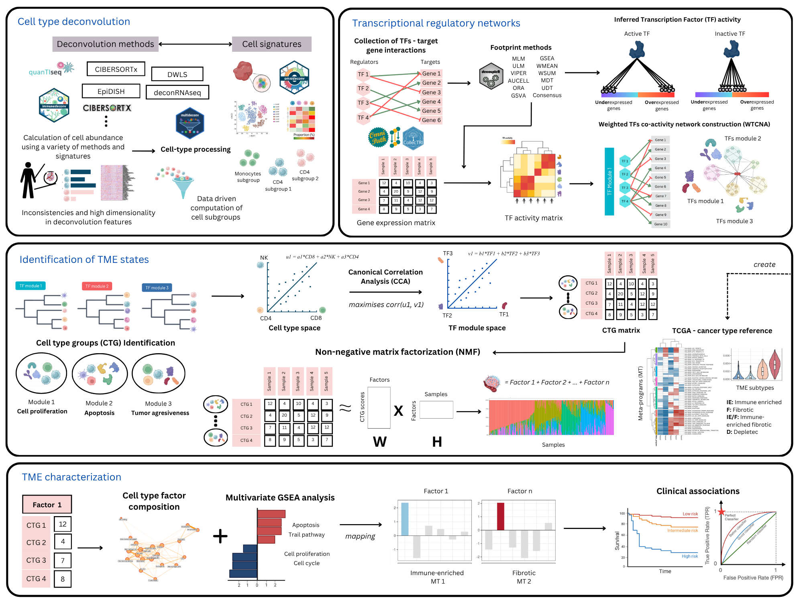

Integration of immune-cell type deconvolution features and prior-knowledge networks of TFs-gene interactions to characterize potential cell states of the tumor microenvironment using bulk RNAseq data

Figure 1. A schematic overview of the CellTFusion pipeline
Installation
To avoid GitHub API rate limit issues during installation, we recommend setting up GitHub authentication by creating and storing a Personal Access Token (PAT). You can do this with the following steps:
# install.packages(c("usethis", "gitcreds"))
usethis::create_github_token() #Create a Personal Access Token (if you don't have)
gitcreds::gitcreds_set() #Add the tokenYou can install the development version of CellTFusion from GitHub with:
# install.packages("pak")
pak::pkg_install("VeraPancaldiLab/CellTFusion")Launch the Shiny app
You can run the CellTFusion Shiny interface in two ways.
From an installed package:
library(CellTFusion)
shiny::runApp(system.file("shiny", package = "CellTFusion"))From this source repository:
shiny::runApp("inst/shiny")In the app, click Load tutorial data for a quick demo, then click Run CellTFusion. Results and downloadable files are written to your working directory.
General usage
These are basic examples which shows you how to use CellTFusion for different tasks. For a detailed tutorial, see Get started
Before running CellTFusion, make sure to set your working directory. The Results/ folder, where outputs will be saved, will be created in this directory.
setwd('~/path/to/directory')
library(CellTFusion)If you want to run the full pipeline in one step — including normalization, deconvolution, TF activity scoring, module construction, and pathway scoring — use the CellTFusion() wrapper function.
res <- CellTFusion(
raw.counts = raw.counts,
normalized = TRUE,
coldata = traitdata, # Optional metadata
deconv_methods = c("Quantiseq", "DeconRNASeq"), # Choose from Quantiseq, Epidish, DeconRNASeq, DWLS, CBSX
cbsx.mail = "your_email", # Required if using CBSX (CIBERSORTx)
cbsx.token = "your_token", # Required if using CBSX (CIBERSORTx)
TF.collection = "CollecTRI", # "CollecTRI", "Dorothea", or "ARACNE"
cancer_type = "skcm", # TCGA cancer type, used for meta-program mapping
file_name = "TestRun",
min_targets_size = 15,
minMod = 20,
corr_mod = 0.25,
corr = 0.7,
pval = 0.05,
return = TRUE
)If cell subgroups (dt), TF activity (tfs), and/or pathway activity (pathways) have already been computed — e.g. from a previous CellTFusion() run — you can pass them back in to skip recomputing those steps. Once all three are supplied, the pipeline proceeds straight to cell group construction:
res2 <- CellTFusion(
raw.counts = raw.counts,
normalized = TRUE,
coldata = traitdata,
dt = res$Processed_deconvolution,
tfs = res$TFs_matrix,
pathways = res$Pathways_scores,
file_name = "TestRun_rerun",
minMod = 20,
corr_mod = 0.25,
pval = 0.05,
return = TRUE
)NOTE: CIBERSORTx is included in the deconvolution methods, but it’s not an open-source program. To run it, request a token at CIBERSORTx, add "CBSX" to deconv_methods and provide your email and token with the cbsx.mail and cbsx.token parameters.
Output structure
CellTFusion() returns a named list with the outputs of each pipeline stage — cell-type deconvolution, TF activity, TF module network, pathway scores, cell groups, latent factors, cell niches, and TME state mapping. Cell groups are derived internally via construct_cell_groups() and are available at res$Cell_groups:
res$Cell_groups$Cell_groups # data frame of cell group scores (samples x groups)
res$Cell_groups$Composition # cell types included in each group
res$Cell_groups$Weights # CCA projection parameters per group (used to score new samples)For a step-by-step walkthrough of every pipeline stage, see the Get started vignette and the articles section.
Replicate cell groups on an independent dataset
Use this function to apply the trained cell groups to an external test set and calculate group-specific composite scores. To directly obtain the latent factors of new samples, use project_test_factors(res, deconv_test) (see the Machine learning workflows article).
test_scores <- compute.test.set(
deconv_res = deconv_res_test,
cell_groups = cell_groups,
features = selected_features,
deconvolution_test = deconv_matrix_test
)Machine learning with pipeML
To use the latent factors as features in pipeML without information leakage, pass prepare_celltfusion_folds() as the fold construction function: CellTFusion() is then run on the training samples of each cross-validation fold, and the test samples are projected onto the resulting latent factors. It works for classification and survival tasks.
ml_res <- pipeML::compute_features.training.ML(
features_train = t(raw.counts),
task_type = "classification",
target_var = traitdata$Response,
trait.positive = "R",
metric = "AUROC",
fold_construction_fun = prepare_celltfusion_folds,
fold_construction_args_fixed = list(deconv = deconv, raw.counts = raw.counts)
)
# Features of new samples, projected onto the final model
features_test <- project_test_factors(ml_res$Custom_output, deconv_test)See the Machine learning workflows article for details.
Issues
If you encounter any problems or have questions about the package, we encourage you to open an issue here. We’ll do our best to assist you!
Authors
CellTFusion was developed by Marcelo Hurtado in supervision of Vera Pancaldi and is part of the Pancaldi team. Currently, Marcelo is the primary maintainer of this package.
Citing CellTFusion
If you use CellTFusion in a scientific publication, please cite:
Hurtado, M., & Pancaldi, V. (2026). CellTFusion: A transcriptional regulatory network framework for the identification of functional multicellular states from bulk RNA-seq data. bioRxiv. https://doi.org/10.64898/2026.06.30.735682